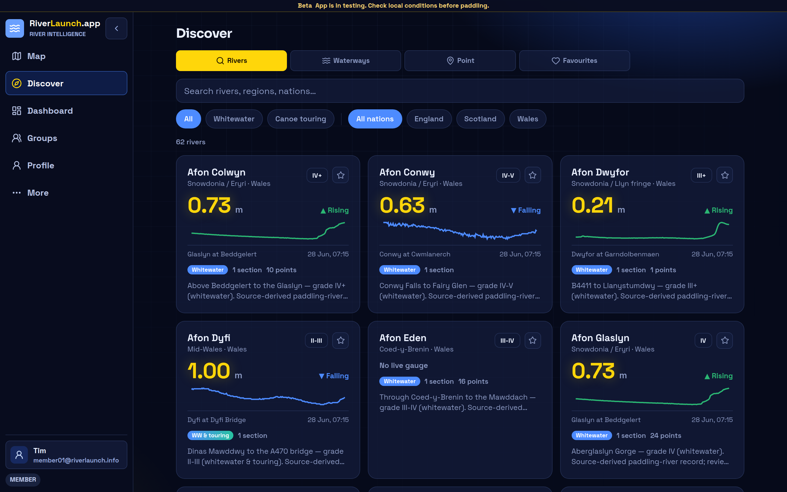

Section context
Put-ins, take-outs, distance, estimated time, canoe suitability, route character, and practical access notes.
UK-first canoe planning
Real, community-kept knowledge for the rivers you paddle — access points, hazards, photos, recent reports, and live levels, all in one place.
What it does
It's more than a gauge reading. RiverLaunch brings together the access points, hazards, photos, and recent reports for a real stretch of river, so you can pick a trip that suits the day's conditions and your group.
Put-ins, take-outs, distance, estimated time, canoe suitability, route character, and practical access notes.
Linked gauges and community runnable ranges help you read what today's level actually means for a stretch.
Hazards, condition reports, photos, confirmations, disputes, and staleness indicators keep changing information visible.

Discover rivers
The Discover page brings UK rivers together with current gauge readings, trend sparklines, grades, discipline tags, and section counts — filterable by whitewater, canoe touring, and nation.
Screenshots show preview app content. River and access information should be locally verified before public trip planning.
Application preview
The live application preview is hosted at staging.riverlaunch.app. It uses prototype content, so treat it as a preview only, not as production river guidance.
On the water
The detail that decides whether a trip works — access, parking, campsites, take-outs, levels, and recent hazards — gathered in one place for real UK touring and whitewater rivers.
Put-ins, take-outs, parking, campsites, and portages — the practical detail that makes a day on the water run smoothly.
Live levels, community runnable ranges, and recent hazards, so you can make the call before you leave home.
Paddled it? Add a report, photo, or hazard and keep the information fresh for the next crew.
Give back
RiverLaunch shows recent reports and known hazards along with how confident we are in them. We never tell you a river is safe, approved, or guaranteed — that call is always yours, on the day.